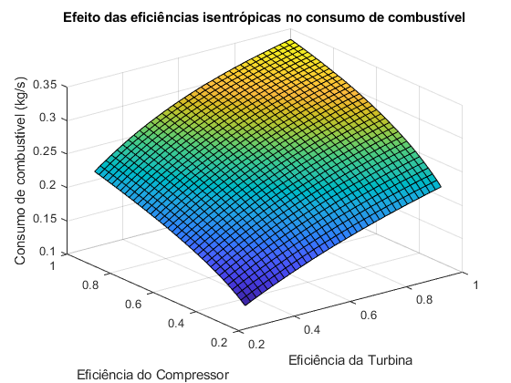
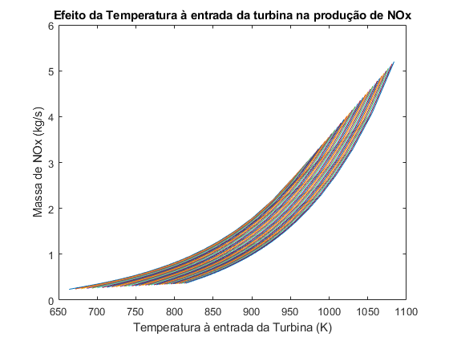
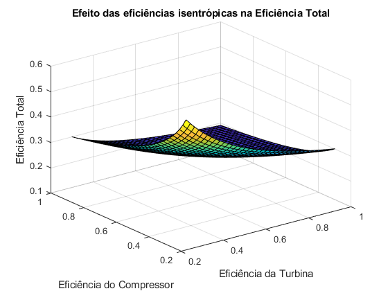

Projeto de Emissões
Realizado por: Íris Alves (105856), Carolina Martins (105872), Raquel Figueira (105896), Diogo Martins (105980), Francisco Rodrigues (106298) e Rafael Santos (106599)
Contents
Limpeza de memória
clc, clearvars, close all
Constantes
% Termodinâmicas R = 287; % Constante universal dos gases para o ar kf = 1.4; % ratio of the specific heat do ar para baixas temperaturas kq = 1.333; % ratio of the specific heat do ar para altas temperaturas cpf = (kf * R)/(kf - 1); % Calor específico a pressão constante a baixas temperaturas cpq = (kq * R)/(kq - 1); % Calor específico a pressão constante a altas temperaturas % Eficiências size = 36; % Tamanho dos vetores eta_c = linspace(0.3,1,size); % Eficiência isentrópica do compressor eta_t = linspace(0.3,1,size).'; % Eficiência isentrópica da turbina eta_n = 0.97; % Eficiência isentrópica do nozzle % Design Rp = 8.3; % Rácio de pressão m = 24; % Mass Flow Rate (kg/s) % Condições Exteriores - a cruise altitude 40000ft V0 = 563*10^3/3600; % Velocidade de entrada do ar Ta = 216.65; % Temperatura atmosférica pa = 18832.8; % Pressão atmosférica den = 0.30333; % Densidade do ar a = sqrt(kf*R*Ta); % Velocidade do som Ma = V0/a; % Número de Mach H_ker = 43.260*10^6; % Calorific value of kerosene Thrust = 18000; % Thrust fixado
Cálculos
p2 = pa + (den*V0^2)/2; % Aproximação de que p2 é igual à pressão de total em a T2 = Ta; % Aproximação de que T2 = Ta pe = pa; % Aproximação de que a pressão de saída é igual à pressão a p3 = Rp*p2; T3s = T2*(p3/p2)^((kf-1)/kf); % Dado a falta de equações para o número de variáveis, efetua-se um % processo iterativo de erro < 0.001 for i=1:size for j=1:1:size T3(i,j) = T2 + (T3s - T2)./eta_c(i); W(i,j) = m*(cpf*(T3(i,j)-T2)); % Trababalho necessário para o compressor p4(i,j) = p3; T5(i,j) = 1080; % Valor de iteração inicial erro = 1; % Iniciar a variável erro it(i,j) = 0; % Zerar o contador de iterações while(1) T5_it(i,j) = T5(i,j); % Definição do valor da iteração inicial T4(i,j) = T5(i,j) + W(i,j)/(m*cpq); T5s(i,j) = T4(i,j) + cpq*(T4(i,j)-T5(i,j))./(cpq.*eta_t(j,1)); p5(i,j) = p4(i,j)*(T5s(i,j)/T4(i,j)).^(kq/((kq-1))); Te(i,j) = T5(i,j).*(pe./p5(i,j)).^((kq-1)/kq); V5 = 0; % Aproximar que a velocidade anterior ao nozzle é nula Ves(i,j) = Thrust/m + V0; Ve(i,j) = sqrt(eta_n) * Ves(i,j); if ~(it(i,j)<100 && erro>0.001) % Condições de fim de iteração break; end T5(i,j) = Te(i,j)-(V5^2-Ve(i,j)^2)/(2*cpq); erro = abs((T5(i,j)-T5_it(i,j))/T5_it(i,j)); it(i,j) = it(i,j)+1; end Q(i,j) = m*cpq.*(T4(i,j)-T3(i,j))/0.8; % Aproximar que 80% da energia calorífica é útil % Cálculo da massa por kg/s de combustível e de cada componente m_fuel(i,j) = Q(i,j)/H_ker; m_CO2(i,j) = 3.150*m_fuel(i,j); m_H20(i,j) = 1.250*m_fuel(i,j); m_SO2(i,j) = 0.8*10^(-3)*m_fuel(i,j); m_CO(i,j) = 0.6*10^(-3)*m_fuel(i,j); m_UHC(i,j) = 0.01*10^(-3)*m_fuel(i,j); EINox(i,j) = 10^(1 + 0.0032*(T3(i,j) - 581.25)) * sqrt(pa/101325); % A4 - 25 - Lipfert m_NOX(i,j) = EINox(i,j)*m_fuel(i,j); m_poluentes(i,j) = m_CO2(i,j) + m_H20(i,j) + m_SO2(i,j) + m_CO(i,j) + m_UHC(i,j) + m_NOX(i,j); % Cálculo das restantes eficiências eta_j(i,j) = 2./(1 + Ve(i,j)/V0); % Eficiência propulsiva eta_thermal(i,j) = m.*(Ve(i,j).^2-V0^2)./(2*Q(i,j)); % Cálculo da eficiência térmica eta_total(i,j) = eta_thermal(i,j)*eta_j(i,j); % Cálculo da eficiência total end end
Plots
figure() surf(eta_t,eta_c,W) xlabel('Eficiência da Turbina'); ylabel('Eficiência do Compressor'); zlabel('Trabalho (J)'); title('Efeito das eficiências isentrópicas no Trabalho') figure() surf(eta_t,eta_c,eta_thermal) xlabel('Eficiência da Turbina'); ylabel('Eficiência do Compressor'); zlabel('Eficiência de Térmica'); title('Efeito das eficiências isentrópicas na Eficiência Térmica') figure() surf(eta_t,eta_c,eta_total) xlabel('Eficiência da Turbina'); ylabel('Eficiência do Compressor'); zlabel('Eficiência Total'); title('Efeito das eficiências isentrópicas na Eficiência Total') figure() surf(eta_t,eta_c,eta_j) xlabel('Eficiência da Turbina'); ylabel('Eficiência do Compressor'); zlabel('Eficiência de Froude'); title('Efeito das eficiências isentrópicas na Eficiência de Froude') figure() surf(eta_t,eta_c,m_poluentes) xlabel('Eficiência da Turbina'); ylabel('Eficiência do Compressor'); zlabel('Massa de Poluentes (kg/s)'); title('Efeito das eficiências isentrópicas na massa de Poluentes') figure() surf(eta_t,eta_c,m_fuel) xlabel('Eficiência da Turbina'); ylabel('Eficiência do Compressor'); zlabel('Consumo de combustível (kg/s)'); title('Efeito das eficiências isentrópicas no consumo de combustível') figure() plot(T4,m_NOX) xlabel('Temperatura à entrada da Turbina (K)'); ylabel('Massa de NOx (kg/s)'); title('Efeito da Temperatura à entrada da turbina na produção de NOx')  